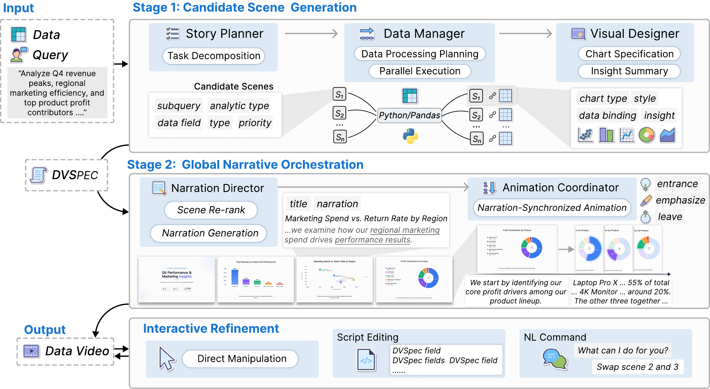
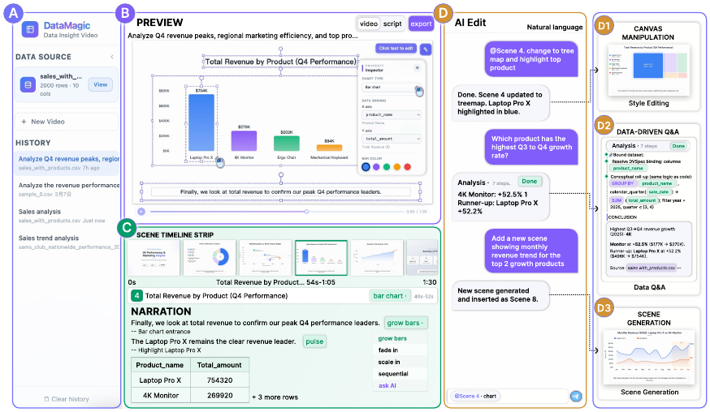
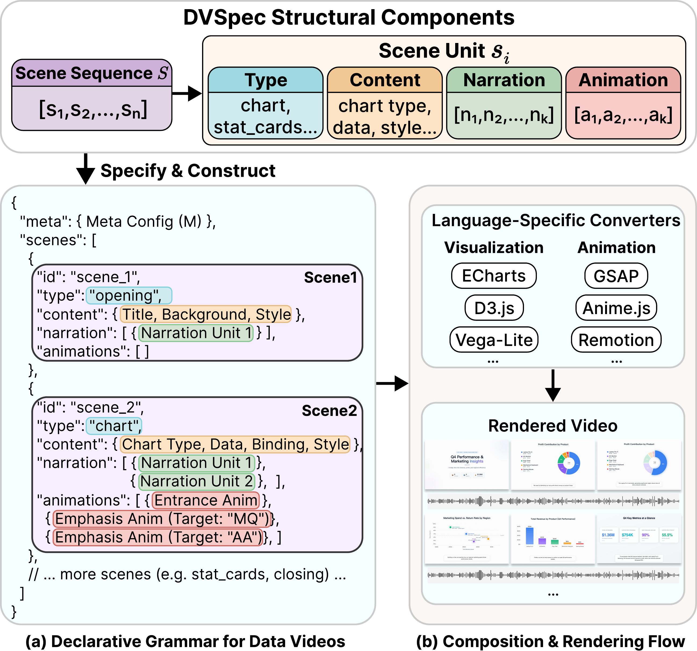
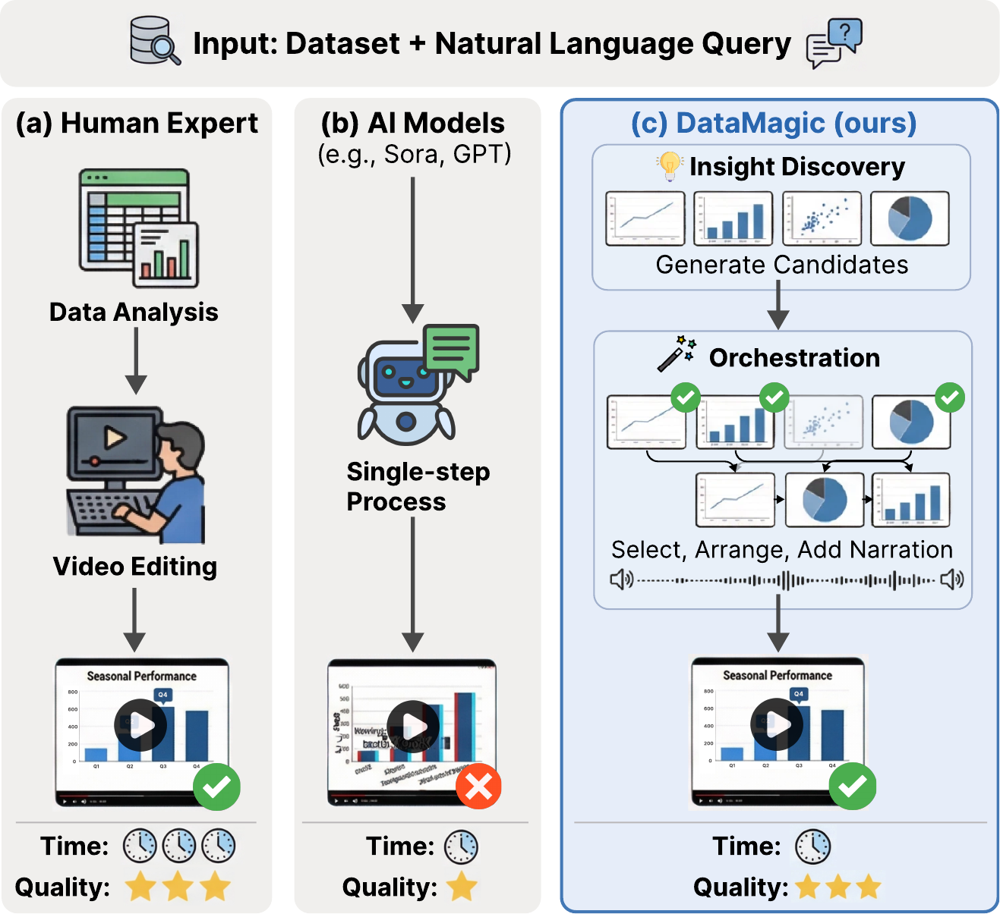

HKUST (GZ) · China Unicom
Data videos integrate dynamic charts, voice narration, and synchronized animations to communicate data insights as temporal narratives. Yet producing them requires cross-domain expertise across data analysis, narrative design, and video production — a barrier that existing tools cannot remove: static BI dashboards lack animation; authoring tools need pre-prepared charts; pixel-level generators (e.g., Sora) produce numerical hallucinations with no data provenance.
We demonstrate DataMagic, an end-to-end interactive system that transforms raw tabular data and natural language queries into narrative data-insight videos. The system introduces DVSpec, a declarative specification that binds visual and animation elements to underlying data fields through data-driven semantic references, ensuring full provenance. A Generate-then-Orchestrate multi-agent architecture generates candidate scenes in parallel before optimizing global narrative coherence. Evaluation on 109 real-world samples validates system effectiveness.
Every visual element is semantically bound to source data — no hallucinations, full provenance from pixel back to CSV row.
Animation triggers use narration indices, not timestamps. Edit a script line and sync is preserved automatically.
Parallel scene generation decouples local quality from global coherence, enabling true narrative optimization.
Canvas manipulation, script editing, and natural language commands — all sharing one DVSpec state, no full regeneration.
Ask questions about a playing scene; the system queries the original CSV directly rather than inferring from pixels.
Q&A insights convert into new video scenes on the fly, closing the loop from data exploration to narrative expansion.
DataMagic takes raw tabular datasets and natural language queries, processes them through a multi-agent engine to produce a DVSpec configuration, and compiles it into a complete narrative video. The architecture has three components: DVSpec (the intermediate representation), a two-stage multi-agent pipeline, and provenance-based interaction.

Figure 1. System architecture — two-stage pipeline from raw tabular data to narrative video, with DVSpec as the structured intermediate representation.

Figure 2. Web interface: (A) data and history panel, (B) real-time video preview, (C) scene timeline and narration editor, (D) AI-assisted editing panel with canvas manipulation (D1), provenance-based Q&A (D2), and scene generation (D3).
Existing specifications such as Vega-Lite and Canis cover static charts or single-chart animations, but lack the unified cross-modal and temporal coordination needed for multi-scene data videos. DVSpec fills this gap — a structured intermediate representation that fully decouples logical description from rendering implementation.
DVSpec formalizes a data video as V := (M, S), where S = ⟨s₁,…,sₙ⟩. Each scene is a four-tuple sᵢ := (type, content, narration, animation), with content encapsulating chart configuration, narration as an ordered list of segments, and animation as a list of effects. DVSpec is rendering-library agnostic — the current system uses D3.js and Remotion.
Visual elements are referenced by data attribute values — e.g., {"product": "4K Monitor"} — not hard-coded identifiers. References stay valid across data updates and chart-type changes, ensuring every pixel traces to a CSV cell.
Animation triggers are declared with narration segment indices, not absolute timestamps. When users edit narration text and TTS audio duration changes, the system automatically re-aligns all animation timing — no manual keyframe adjustment.

Figure 3. DVSpec structure (a) and rendering flow (b). The specification is translated by language-specific converters into D3.js visualizations and Remotion animations.
// Chart scene with semantic references + narration-indexed triggers { "type": "chart", "content": { "chart_type": "bar", "data_bindings": { "x": "product", "y": "growth_rate" } }, "narration": [ "4K Monitor leads with 52.5% Q3-to-Q4 growth,", // index 0 "followed by Laptop Pro X at 52.2%." // index 1 ], "animation": [ { "type": "highlight", "target": { "product": "4K Monitor" }, // semantic ref — not a pixel coord "trigger": { "narration_index": 0 } // auto-aligns to TTS duration }, { "type": "highlight", "target": { "product": "Laptop Pro X" }, "trigger": { "narration_index": 1 } } ] }
Evaluated on 109 real-world samples from DAComp-DA and T2R-bench. Four LLMs — DeepSeek-V3.2, Gemini-2.5-Pro, GPT-5, Claude-Sonnet-4 — serve as single-pass baselines and are also integrated into DataMagic to verify model-agnosticism. Five quality dimensions (1–5 scale); Gemini-2.5-Pro as automated judge (Pearson r = 0.91 vs. human experts, 60 videos).

Figure 4. Quantitative comparison across five quality dimensions: Intent Fulfillment, Data Insights, Narrative Quality, Animation Effectiveness, and Aesthetic Quality.
Main finding: Even the strongest LLMs score only 1.91–2.22 with execution rates of 48–86%. The dominant failure modes are audio-visual temporal misalignment and absence of narrative structure.
DataMagic resolves these through DVSpec's narration-index triggering and the Generate-then-Orchestrate strategy — raising the average to 3.89 with 95%+ execution rate. Largest gains: Animation Effectiveness (+120%) and Narrative Quality (+72%). All four LLM backends benefit equally, confirming model-agnosticism.
The demonstration runs through a web interface with: (A) data and history panel, (B) real-time video preview, (C) scene timeline and narration editor, (D) AI-assisted editing panel.
Upload a business CSV (e.g., tech company financial reports) and enter a natural language query — "Analyze Q4 revenue peaks, regional marketing efficiency, and top product profit contributors." Watch the multi-agent engine execute in real time: query decomposition → parallel data slicing → chart design → narrative orchestration.
Unlike black-box generation, the system transparently displays the scene timeline, narration text, animation labels, and underlying data tables — letting you trace every visual element back to the source CSV.
Refine the generated video through three modes that share a single DVSpec state — edits are local and incremental, never triggering full regeneration:
Traditional video models output pixel streams and cannot understand the data behind the visuals. DVSpec preserves full semantic provenance, turning one-way videos into explorable data interfaces:
BibTeX